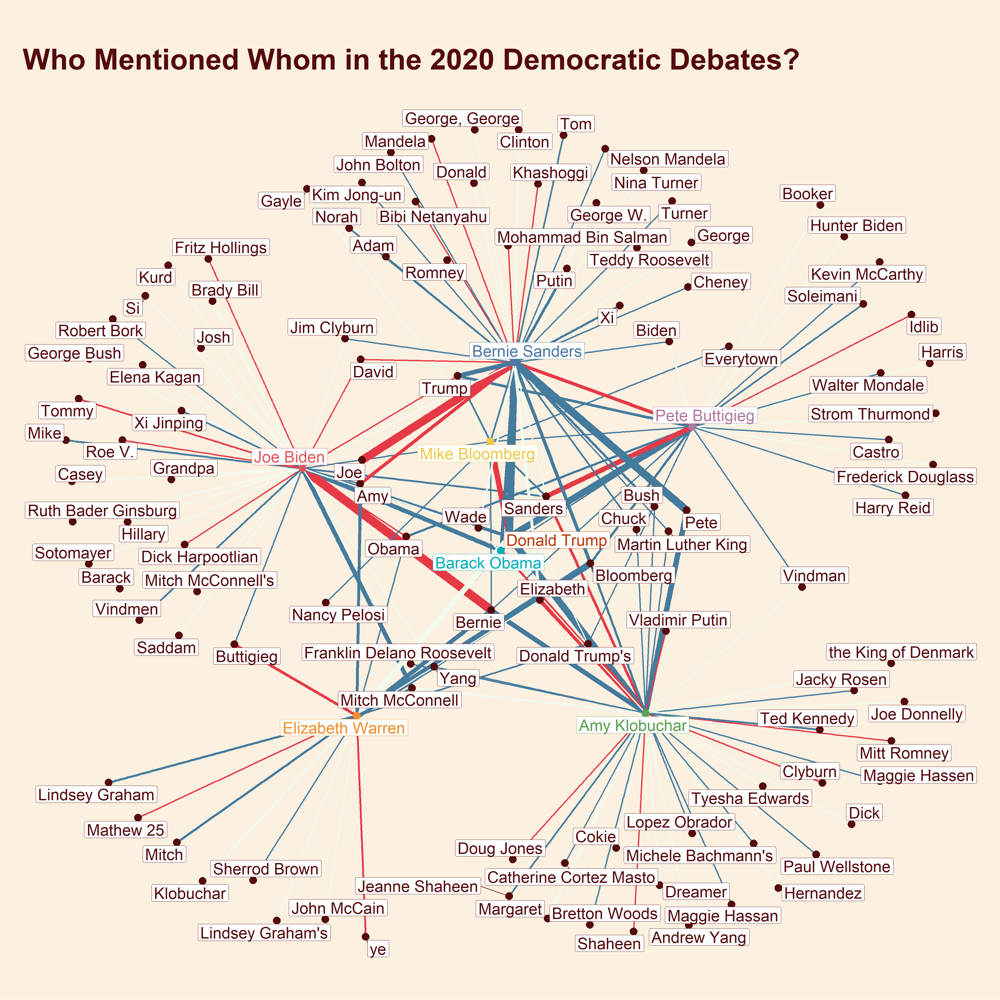
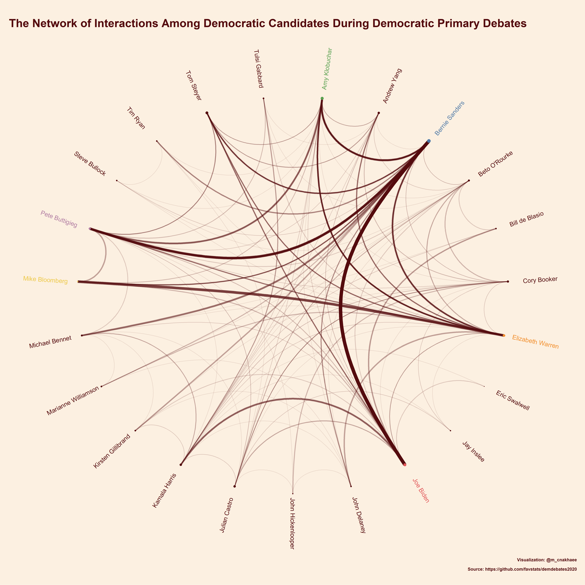
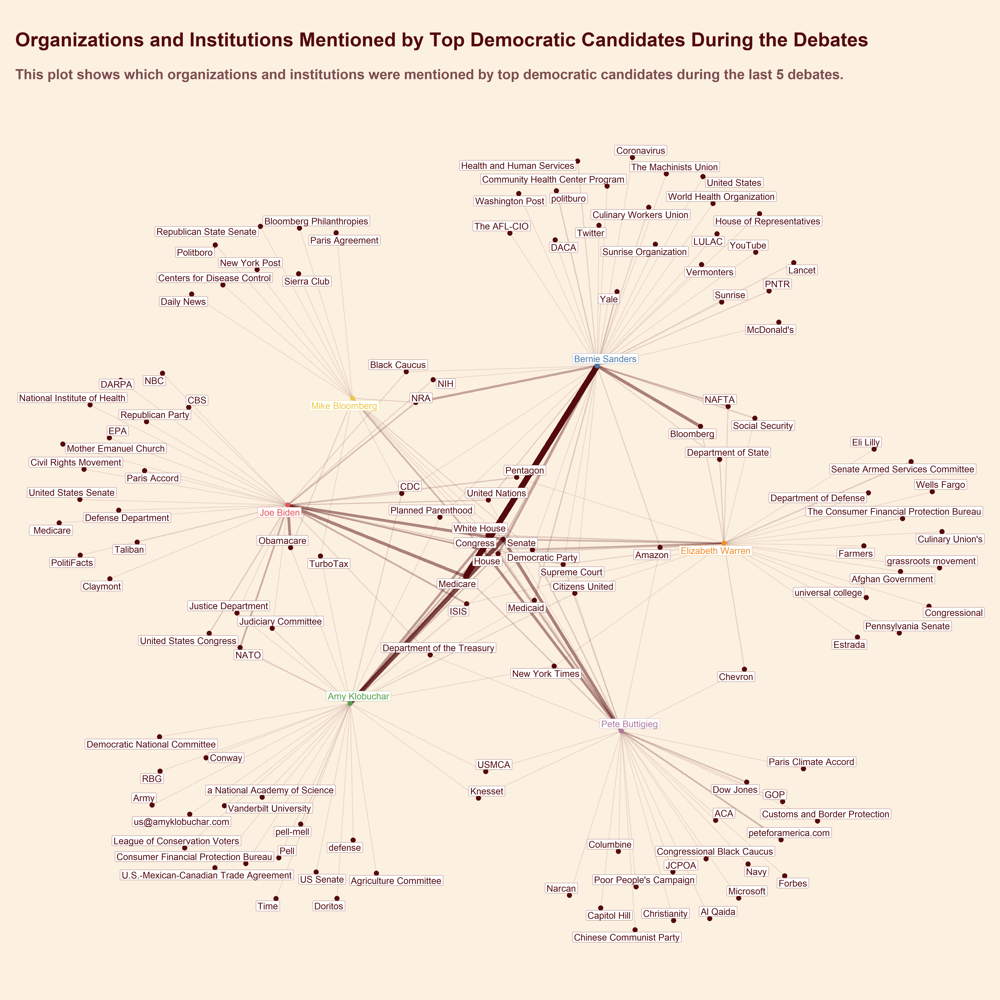
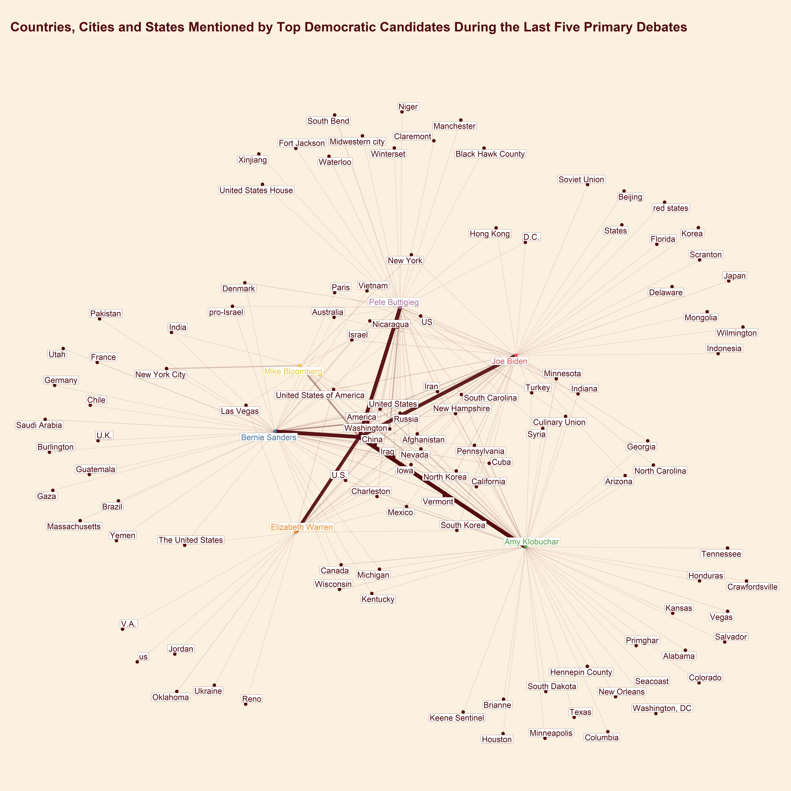
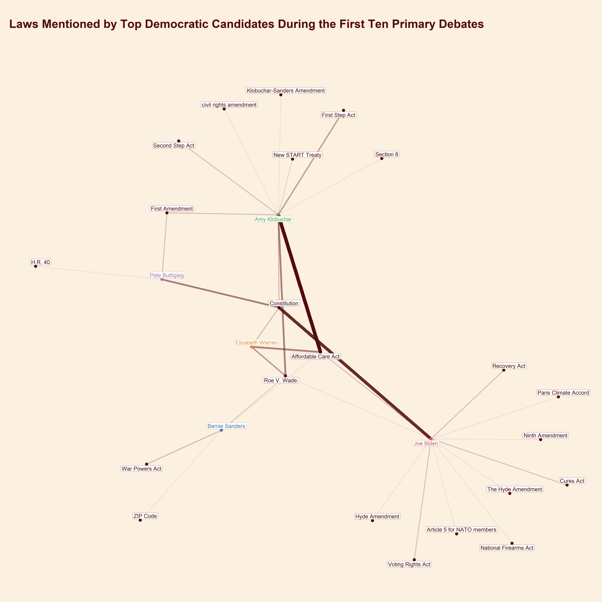

1. Introduction
Many of us could not watch every 2020 Democratic Primary debate. It was important for some of us to know what happened during the debates. In my case, I was reading about what happened in debates in some online newspapers, or I watched a highlight of a debate on Youtube the next day. However, they only give a summary of a debate or just broadcast a portion of debates that includes a heated exchange of opinions between candidates. As a result, many important issues raised by candidates will be ignored and forgotten in the aftermath of a debate. So, it is crucial to summarize the debates content so that everyone could understand what went on in the debate and what issues each candidate addressed during his/her speech. In this blog post, I will show you how I used some NLP techniques for exploring the content of debates and give you a comprehensive overview of topics that each candidate discussed.
In my last blog post, I explained that I had the three following goals in mind when I started exploring the 2020 Democratic Debates :
- To know how eloquent presidential candidates are.
- To find out who used more positive or more negative words in his/her speech by performing sentiment analysis.
- A map of topics, individuals, and entities that each candidate mentioned in his/her speech by using named entity recognition and network analysis..
I only discussed how I approached the first two aspects of my experiment in my last blogpost. Now it is time to investigate the third and last one.
Initially, my aim was to use network analysis to determine potential allies and enemies on the debate stage. For example, Elizabeth Warren mentioned Mike Bloomberg several times and attacked him harshly in the 9th debate. During the same debate, Amy Klobuchar and Pete Buttigieg clashed bitterly with each other. These are just two instances of many other heated exchanges between the candidates that happened throughout the ten debates.
To make things more precise, I transformed my objective into two questions that I would like to answer:
- How many times did a candidate address (mention) other candidates during a debate?
- How did he/she refer to a candidate(in a friendly or unfriendly manner)?
A simple approach to answering these questions is to store the names of all candidates in a variable (for example, a vector in R or a list in Python), iterate over the transcript, compute the sentiment, count and store the number of times that another candidate brought up a candidates name.
However, this approach is a little bit challenging and requires a lot of manual data pre-processing efforts. For each democratic candidate, one must compile a comprehensive combination of ways that may be used to call a candidate, and to prepare such a list seems to be a very time-consuming task. For example, other candidates mentioned Bernie Sanders in many different ways, including Bernie, Bernie Sanders, or Senator Sanders.
I realized that I could use Named Entity Recognition (NER), a technique from the Natural Language Processing (NLP) literature, to extract candidates names from the transcript and solve this problem more efficiently. Using this approach, I can find candidates names from the transcript, but I can also find the names of other politicians, individuals, and even organizations and further extend my analysis to include many more topics and issues.
2. Workflow
I made use of both Python and R in my analysis. My workflow includes the following steps:
- I access the transcript of debates using this package.
- I use tidytext to split the transcript into multiple sentences and also for sentiment analysis.
- I extract several types of Named Entities from each sentence, using Spacy,
- I compute the sentiment of each sentence using TextBlob library in Python.
- I transferred the results to R for visualization. There, I visualize the network of mentions and entities using ggraph and ggplot library.
Note that I could have implemented all the steps in R. For instance, Spacy has an R wrapper called Spacyr, which gives the same functionality that I need for this analysis. However, Id like to increase the number of tools that I can use. Notably, using Python and R side by side is an exciting challenge for me.
Show code
library(demdebates2020)
library(tidytext)
library(tidygraph)
library(tidyverse)
library(ggraph)
library(gghighlight)
library(ggthemes)
library(kableExtra)
library(reticulate)
library(magrittr)
library(pluralize)
theme_set(
theme_graph(base_family = 'Montserrat') +
theme(
panel.border = element_blank(),
plot.title = element_text(
family = 'Montserrat',
face = "bold",
colour = '#540b0e',
size = 42,
margin = ggplot2::margin(40, 40, 20, 10),
hjust = 0
),
plot.subtitle = element_text(
family = 'Montserrat',
face = "bold",
colour = '#7d4f50',
size = 30,
margin = ggplot2::margin(20, 40, 80, 10),
hjust = 0
),
plot.caption = element_text(
family = 'Montserrat',
face = "bold",
colour = '#540b0e',
size = 16,
margin = ggplot2::margin(0, 0, 20, 20),
),
legend.position = 'none',
plot.background = element_rect(fill = '#FCF0E1'),
)
)2.2 Loading the dataset
Show code
head(debates) Show code
head(debates) %>%
kable() %>%
kable_styling(bootstrap_options = c("striped", "hover", "condensed", "responsive"))| speaker | background | speech | type | gender | debate | day | order |
|---|---|---|---|---|---|---|---|
| Savannah Guthrie | NA | All right. So with that business out of the way, we want to get to it. And well start this evening with Senator Elizabeth Warren. | Moderator | female | 1 | 1 | 1 |
| Savannah Guthrie | NA | Senator, good evening to you. | Moderator | female | 1 | 1 | 2 |
| Elizabeth Warren | NA | Thank you. Good to be here. | Candidate | female | 1 | 1 | 3 |
| Savannah Guthrie | NA | You have many plans - free college, free child care, government health care, cancellation of student debt, new taxes, new regulations, the breakup of major corporations. But this comes at a time when 71 percent of Americans say the economy is doing well, including 60 percent of Democrats. What do you say to those who worry this kind of significant change could be risky to the economy? | Moderator | female | 1 | 1 | 4 |
| Elizabeth Warren | NA | So I think of it this way. Who is this economy really working for? Its doing great for a thinner and thinner slice at the top. Its doing great for giant drug companies. Its just not doing great for people who are trying to get a prescription filled. | Candidate | female | 1 | 1 | 5 |
| Elizabeth Warren | NA | Its doing great for people who want to invest in private prisons, just not for the African Americans and Latinx whose families are torn apart, whose lives are destroyed, and whose communities are ruined. | Candidate | female | 1 | 1 | 6 |
2.1. Tokenization
As I mentioned before, I use tidytext to tokenize the transcript dataset based on sentences. For sentence tokenization, you need to set token = 'sentences' in unnest_tokens() function. I think sentence tokenization is a reasonable choice because candidates might change the subject or the tone of their speech in each sentence.
Show code
debates <- debates %>%
unnest_tokens(sentence, speech, token = 'sentences',to_lower = FALSE)Show code
head(debates) Show code
head(debates) %>%
kable() %>%
kable_styling(bootstrap_options = c("striped", "hover", "condensed", "responsive"))| speaker | background | type | gender | debate | day | order | sentence |
|---|---|---|---|---|---|---|---|
| Savannah Guthrie | NA | Moderator | female | 1 | 1 | 1 | All right. |
| Savannah Guthrie | NA | Moderator | female | 1 | 1 | 1 | So with that business out of the way, we want to get to it. |
| Savannah Guthrie | NA | Moderator | female | 1 | 1 | 1 | And well start this evening with Senator Elizabeth Warren. |
| Savannah Guthrie | NA | Moderator | female | 1 | 1 | 2 | Senator, good evening to you. |
| Elizabeth Warren | NA | Candidate | female | 1 | 1 | 3 | Thank you. |
| Elizabeth Warren | NA | Candidate | female | 1 | 1 | 3 | Good to be here. |
3. Named Entity Recognition using Spacy
Now we change to python for NER, but we need to install and import a few python libraries before starting the analysis.
Show code
import pandas as pd
import spacy
from textblob import TextBlobIn RStudio and Rmarkdown notebooks, with the help of the reticulate library, we can easily load the debate dataset in our R environment to our Python environment.
Show code
debates = r.debatesNote that in in the transcript dataset there are rows for both the candidates and the moderators who asked questions from candidates. However, we are particularly interested in what the candidates said, so we only filter rows corresponding to candidates.
Show code
candidates = debates[(debates['type'] == 'Candidate') & (pd.notnull(debates['sentence'])) ]We are almost ready to extract the named entities. However, to use Spacys NLP features such as NER, we first need to download and load a pre-trained English language model. There are several English language models with different sizes available in Spacy. I used the largest language model available as it might be better and more accurate.
Show code
nlp = spacy.load('en_core_web_lg')Spacys NER model is trained on the OntoNotes 5 corpus, and it can detect several types of named entities, including:
| TYPE | DESCRIPTION |
|---|---|
PERSON |
People, including fictional. |
NORP |
Nationalities or religious or political groups. |
FAC |
Buildings, airports, highways, bridges, etc. |
ORG |
Companies, agencies, institutions, etc. |
GPE |
Countries, cities, states. |
LOC |
Non-GPE locations, mountain ranges, bodies of water. |
PRODUCT |
Objects, vehicles, foods, etc. (Not services.) |
EVENT |
Named hurricanes, battles, wars, sports events, etc. |
WORK_OF_ART |
Titles of books, songs, etc. |
LAW |
Named documents made into laws. |
LANGUAGE |
Any named language. |
DATE |
Absolute or relative dates or periods. |
TIME |
Times smaller than a day. |
PERCENT |
Percentage, including %. |
MONEY |
Monetary values, including unit. |
QUANTITY |
Measurements, as of weight or distance. |
ORDINAL |
first, second, etc. |
CARDINAL |
Numerals that do not fall under another type. |
As you can see, there are many types of named entities, but I narrow down my analysis to just a handful of them, including PERSON, ORG, GPE, NORP, LAW, and LOC. The named entity labels are stored in label_ attribute. To do so, we need to create Doc object using nlp() method. When we call nlp() on the input text, spacy uses the language model to tokenize the document first. Then, spacy applies a tagger, parser, and named entity recognizer steps as its processing pipelines next components. The named entities can be accessed by ents attribute of the document object.
If you are interested to learn more about Spacy and how it works, I have provided some links at the end of this post.
I define a python function that iterates over all named entities and see to which class of named entities (by default PERSON) they belong. I apply this function to the transcript column in the original dataset and store each extracted type of entity as a separate column.
Show code
def extract_entities_delim(text,type_ent = 'PERSON'):
ent_text = ''
doc = nlp(text)
for e in doc.ents:
if e.label_ == type_ent:
ent_text = e.text+ ';' + ent_text
return ent_textShow code
candidates['PERSON'] = candidates['sentence'].apply(lambda x:extract_entities_delim(x))
candidates['ORG'] = candidates['sentence'].apply(lambda x:extract_entities_delim(x,'ORG'))
candidates['GPE'] = candidates['sentence'].apply(lambda x:extract_entities_delim(x,'GPE'))
candidates['NORP'] = candidates['sentence'].apply(lambda x:extract_entities_delim(x,'NORP'))
candidates['LAW'] = candidates['sentence'].apply(lambda x:extract_entities_delim(x,'LAW'))
candidates['LOC'] = candidates['sentence'].apply(lambda x:extract_entities_delim(x,'LOC'))4. Sentiment Analysis
Next, I use TextBlob to compute each sentences sentiment and store its polarity score in a separate column called polarity_sentiment (TextBlob also returns a subjectivity score, but for simplicity, I will not use this score in my analysis). The polarity sentiment score is a value between -1 and 1. If the value is larger than 0, it means that the sentence has a positive sentiment. On the other hand, if the returned value is smaller than 0, it indicates that the sentences sentiment is negative.
Show code
def polarity_sentiment(text):
blob = TextBlob(text)
return blob.sentiment.polarity
candidates['polarity_sentiment'] = candidates.sentence.apply(lambda x:polarity_sentiment(x))5.Network Visualization
A network (graph) can nicely represent how candidates mentioned individuals and entities in their speeches. We have two types of nodes in this network:
- The first set of nodes represent candidates on the debate stage (from nodes).
- The second set of nodes represent named entities (including the name of candidates themselves) that the candidates referred to in their speeches (to nodes).
If a candidate mentions a named entity in his/her speech, we connect the candidate node and the named entity node via our networks edge. It is also fair to assume that the candidate-entity network should be weighted because candidates tend to place a varying level of importance on different issues, topics, and people (named entities).
We have two options for specifying weights for edges in the network:
- We can use the number of times that a candidate mentioned a named entity in his/her speech. This shows how much a named entity was important to that candidate.
- We can group by candidates and named entities and compute their average sentiment score. By doing so, we can measure how each candidate described these named entities. However, this approach might not be as accurate as we want.
Having said that, it is time to go back to R and visualize the network of candidates and named entities using the ggraph and tidygraph libraries. For each class of named entities, I use as_tbl_graph() function, create a unique graph table dataset, and visualize the network.
So, let us load the sentiment-entity dataset that I created in the Python environment to the R environment.
Show code
candidates <- py$candidatesShow code
candidates <- read_csv('candidates_sentiment_entities.csv')Show code
head(candidates) Show code
head(candidates) %>%
kable() %>%
kable_styling(bootstrap_options = c("striped", "hover", "condensed", "responsive"))| X1 | speaker | background | type | gender | debate | day | order | sentence | PERSON | ORG | GPE | NORP | LAW | LOC | polarity_sentiment |
|---|---|---|---|---|---|---|---|---|---|---|---|---|---|---|---|
| 370 | Amy Klobuchar | NA | Candidate | female | 1 | 1 | 11 | Well, first, the economy. | NA | NA | NA | NA | NA | NA | 0.250 |
| 371 | Amy Klobuchar | NA | Candidate | female | 1 | 1 | 11 | We know that not everyone is sharing in this prosperity. | NA | NA | NA | NA | NA | NA | 0.000 |
| 372 | Amy Klobuchar | NA | Candidate | female | 1 | 1 | 11 | And Donald Trump just sits in the White House and gloats about whats going on, when you have so many people that are having trouble affording college and having trouble affording their premiums. | Donald Trump; | NA | NA | NA | NA | NA | 0.025 |
| 373 | Amy Klobuchar | NA | Candidate | female | 1 | 1 | 12 | So I do get concerned about paying for college for rich kids. | NA | NA | NA | NA | NA | NA | 0.375 |
| 374 | Amy Klobuchar | NA | Candidate | female | 1 | 1 | 12 | I do. | NA | NA | NA | NA | NA | NA | 0.000 |
| 375 | Amy Klobuchar | NA | Candidate | female | 1 | 1 | 12 | But I think my plan is a good one. | NA | NA | NA | NA | NA | NA | 0.700 |
5.1 The Candidate/Person Network
First, I will visualize the candidate/person network. However, I should remind you that in the beginning of the democratic primary, many democratic candidates were competing against each other in the race and on the debate stage. If I were to visualize every individual that each candidate had ever in the network, the results would become unreadable. So, just like my last blog post, I selected a few democratic candidates to show my analysis.
Furthermore, I will only highlight nodes corresponding to the top 6 democratic candidates and other interesting individuals, including Donald Trump and Barack Obama.
Show code
interesting_individuals <-
c(
"Bernie Sanders" ,
"Elizabeth Warren" ,
"Mike Bloomberg" ,
"Pete Buttigieg" ,
"Amy Klobuchar" ,
"Joe Biden",
'Donald Trump',
'Barack Obama'
)
custom_palette <-
c(
'Mike Bloomberg' = '#EDC948',
'Amy Klobuchar' = '#59A14F' ,
'Joe Biden' = '#E15759',
'Pete Buttigieg' = '#B07AA1',
'Elizabeth Warren' = '#F28E2B',
'Bernie Sanders' = '#4E79A7' ,
'Donald Trump' = '#BC3908',
'Barack Obama' = '#00afb9',
'Others' = '#540b0e'
)Show code
persons_graph_table <- candidates %>%
separate_rows(PERSON, sep = ';') %>%
filter(speaker %in% interesting_individuals,PERSON != '', debate %in% c(8, 9, 10)) %>%
mutate(from = speaker, to = PERSON) %>%
group_by(from, to) %>%
summarize(n_mentions = n(),
mean_sent = mean(polarity_sentiment),
sent =case_when(mean_sent < -0.01 ~ 'Negative',
mean_sent > 0.01 ~ 'Positive',
TRUE ~ 'Neutral' )
) %>%
ungroup() %>%
as_tbl_graph() %>%
mutate(interesting_individuals = if_else(name %in% interesting_individuals, name, 'Others'))Show code
edge_cols <- c('#e63946','#f1faee','#457B9D')
ggraph(persons_graph_table, layout = 'kk') +
geom_edge_link(aes(edge_width = n_mentions,colour = sent )) +
geom_node_point(aes(color = interesting_individuals ),size = 5) +
geom_node_label(aes(label = name,color = interesting_individuals),repel = TRUE,size= 8) +
scale_color_manual(values = custom_palette) +
labs(title = 'Who Mentioned Whom in the 2020 Democratic Debates?') +
scale_edge_colour_manual(values = edge_cols) 
If you look at the graph carefully, you will notice three issues with this network. First of all, the sentiment scores do not necessarily indicate how a candidate thinks about that person. For instance, Bernie Sanders and Khashoggis edge is red (i.e.negative sentiment), but Bernie Sanders did not talk negatively about Khashoggi at all but rather how he was murdered. Secondly, there are several nodes in the network that belong to the same individual. For example, Bernie Sanders tends to address other candidates by their first names, but other (younger) candidates usually use the last name to address each other.
The third issue is that some nodes do not represent a person. The transcript dataset is full of errors, and many names are misspelled. Although Spacy is a very powerful library for NER, sometimes it gives us wrong results, and its detected named entities are not always correct. For this reason, we also need to perform a post-processing step in which we remove some incorrectly spelled words or replaced them with their correct forms. I found two ways to deal with these issues: 1. or we can use a name matching algorithm to match the partial names with its full name. This approach can be challenging because we need to have a list of all possible full names, which is only available for the candidates.2. We can manually find undesirable names and replace them with what we want.
5.1 Matching candidate names
A python library called fuzzywuzzycan help us match two strings based on different similarity criteria. However, before using this library, I transform the original dataset into a long dataframe where each row belongs to a pair of candidate-person (from-to), and I move it back to our python environment.
Show code
candidates_long <- candidates %>%
filter(PERSON != '') %>%
separate_rows(PERSON, sep = ';')
head(candidates_long)A tibble: 6 x 16
X1 speaker background type gender debate day order sentence
1 372 Amy Klo~ NA Cand~ female 1 1 11 And Donal~ 2 372 Amy Klo~ NA Cand~ female 1 1 11 And Donal~ 3 384 Amy Klo~ NA Cand~ female 1 1 99 Its some~ 4 384 Amy Klo~ NA Cand~ female 1 1 99 Its some~ 5 422 Amy Klo~ NA Cand~ female 1 1 329 But the p~ 6 422 Amy Klo~ NA Cand~ female 1 1 329 But the p~ # with 7 more variables: PERSON
Show code
candidates_long = r.candidates_longLets look at the full names of democratic candidates.
Show code
import pandas as pd
candidate_lists = pd.unique(candidates_long.speaker)
print(candidate_lists)I define a python function called match_namesthat uses process.extractOne function to select the first matched named entity with at least 80 percent similarity to a candidates full name. The matched names are stored in a separate column called dem_candidate_full_name.
Show code
from fuzzywuzzy import fuzz
from fuzzywuzzy import process Show code
def match_names(name):
try:
return process.extractOne(name, candidate_lists,score_cutoff = 80)[0]
except:
return None
candidates_long['dem_candidate_full_name'] = candidates_long.PERSON.apply(lambda x: match_names(x) )Now we can return to R and continue our analysis.
Show code
candidates_long <- py$candidates_long
glimpse(candidates_long)A word of caution
We need to be very careful with the results of the name-matching algorithm. There are too many politicians with the name John and a John might refer to John McCain or John Bolton not the candidate John Hickenlooper. So, as a post-processing step, I manually explore the dataset to correct the few mistakes that the matching algorithm had made.
Show code
candidates_long <- candidates_long %>%
mutate(PERSON = if_else(
!is.na(dem_candidate_full_name),
dem_candidate_full_name,
PERSON),
PERSON = case_when(PERSON == 'John Hickenlooper' & str_detect(sentence,'McCain') ~ 'John McCain',
PERSON == 'John Hickenlooper' & str_detect(sentence,'Bolton') ~ 'John Bolton',
PERSON == 'John Delaney' & speaker == 'Joe Biden' ~'John McCain',
PERSON == 'John Delaney' & speaker == ' Amy Klobuchar' ~'John McCain',
TRUE ~ PERSON)
) 5.2 Manual name correction
We have a better dataset now, but there are still a lot of inaccurate named entities or inconsistencies in the dataset. Lets start by removing named entities that do not correspond with a real person.
Show code
non_person <-
c(
'y adema' ,
'Appalachia' ,
'AUMF' ,
'bias',
'nondisclosur' ,
'Mathew 25',
'Idlib',
'ye',
'Everytown',
'Kurd',
'Roe V.',
'Wade',
'Trumpism',
'Casey',
'brown',
'Grandpa',
'Dad',
"Josh",
'Uighurs',
'Roe',
'PolitiFact',
'Latinx',
'Brady',
'pre-K.',
'Brady Bill',
'pro-Israel',
'ho',
'Dreamer'
)We have another problem left. Some individuals were mentioned in different ways, and we have several nodes for them in the graph. To solve this issue, I use str_detect function from stringr package to manually modify them names. I must say this was the most tedious and time-consuming part of my analysis!
Show code
persons_graph_table <- candidates_long %>%
filter(speaker %in% interesting_individuals,
!PERSON %in% non_person,
nchar(PERSON)>1) %>%
dplyr::rowwise() %>%
mutate(dem_candidate_full_name = as.character(dem_candidate_full_name)) %>%
mutate(from = speaker, to = PERSON) %>%
mutate(
to = case_when(
to %in% c(
'Donald',
'Donald Trump',
'Donald trump',
'Trump',
'President Trump',
"Donald Trump's"
) ~ 'Donald Trump',
to %in% c('Hillar',
'Clinton',
'Hillary') ~ 'Hillary Clinton',
to %in% c('Obama',
'Barack') ~ 'Barack Obama',
str_detect(to, 'Trump') ~ 'Donald Trump',
str_detect(to, 'Vind') ~ 'Vindman',
str_detect(to, 'Assad') ~ 'Assad',
str_detect(to, 'McCarthy') ~ 'McCarthy',
str_detect(to, 'Trudeau') ~ 'Justin Trudeau',
str_detect(to, 'Bannon') ~ 'Steve Bannon',
str_detect(to, 'Netanyahu') ~ 'Netanyahu',
str_detect(to, 'Martin Luther') ~ 'Martin Luther King',
str_detect(to, 'Mandela') ~ 'Mandela',
str_detect(to, 'Xi') ~ 'Xi Jinping',
str_detect(to, 'Putin') ~ 'Putin',
str_detect(to, 'Mitch') ~ 'Mitch Mcconnell',
str_detect(to, 'Lindsey') ~ 'Lindsey Graham',
str_detect(to, 'Romney') ~ 'Mitt Romney',
str_detect(to, 'George') ~ 'George Bush',
str_detect(to, 'Bush') ~ 'George Bush',
str_detect(to, 'Turner') ~ 'Nina Turner',
str_detect(to, 'Clyburn') ~ 'Jim Clyburn',
str_detect(to, 'Cheney') ~ 'Dick Cheney',
str_detect(to, 'Shaheen') ~ 'Jeanne Shaheen',
str_detect(to, 'Hart') ~ 'Quentin Hart',
str_detect(to, 'Cokie') ~ 'Cokie Roberts',
str_detect(to, 'Kelly') ~ 'Laura Kelly',
str_detect(to, 'Berry') ~ 'Seth Berry',
str_detect(to, 'Grassley') ~ 'Chuck Grassley',
str_detect(to, 'Tommy') ~ 'Tom Steyer',
str_detect(to, 'Pelosi') ~ 'Nancy Pelosi',
str_detect(to, 'Kim') ~ 'Kim Jong-un',
str_detect(to, 'Pence') ~ 'Mike Pence',
str_detect(to, 'Schatz') ~ 'Brian Schatz',
str_detect(to, 'Gates') ~ 'Robert Gates',
str_detect(to, 'Jill') ~ 'Jill Biden',
str_detect(to, 'Casey Jo') ~ 'Casey Jo',
str_detect(to, 'Franklin') |
str_detect(to, 'FDR') ~ 'Franklin D. Roosevelt',
str_detect(to, 'Welch') ~ 'Joseph Welch',
str_detect(to, 'Beau') ~ 'Beau Biden',
str_detect(to, 'Rudy Giuliani') ~ 'Rudy Giuliani',
str_detect(to, 'Bolton') ~ 'John Bolton',
str_detect(to, 'McCain') ~ 'John McCain',
str_detect(to, 'Truman') ~ 'Harry Truman',
str_detect(to, 'Dunford') ~ 'Joe Dunford',
str_detect(to, 'Breyer') ~ 'Justice Breyer',
str_detect(to, 'Cindy') ~ 'Cindy McCain',
to == 'Dick' ~ 'Uncle Dick',
to == 'Charles' ~ 'Charles Fried',
to == 'JFK' |
(to == 'Kennedy' & speaker == 'Joe Biden') ~ 'John F. Kennedy',
to == 'Kennedy' & speaker == 'Amy Klobuchar' ~ 'Ted Kennedy',
to %in% c('Joey') ~ 'Himself',
to %in% c(
'Ady',
'Carl',
'Ady Barkan',
'Derek',
'Mark',
'Salvador',
'Rachael',
'Nicole'
) ~ 'American Constituents',
to %in% c(
'David',
'Chuck',
'Wolf',
' Wolf',
'Margaret',
'Brianne',
'Adam',
'Jake',
'Norah',
'Judy',
'Gayle',
'Dana',
'Jorge - it',
'Lester',
'Rachel'
) ~ 'Moderator',
TRUE ~ to
)
) %>%
group_by(from, to) %>%
summarize(n_mentions = n()) %>%
ungroup() %>%
as_tbl_graph() %>%
mutate(interesting_individuals = if_else(name %in% interesting_individuals, name, 'Others')) Finally, we can visualize the network with modified node names.
Show code
edge_cols <- c('#e63946', '#f1faee', '#457B9D')
ggraph(persons_graph_table, layout = 'nicely') +
geom_edge_link(aes(edge_width = n_mentions, alpha = n_mentions), color = '#540b0e') +
geom_node_point(aes(color = interesting_individuals),size = 6) +
geom_node_label(
aes(label = name, color = interesting_individuals),
repel = TRUE,
size = 8,
label.r = 0.4,
check_overlap = TRUE
) +
scale_color_manual(values = custom_palette) +
labs(title = 'Individuals Mentioned by Top Democratic Candidates During the Democratic Primary Debates',
subtitle = 'This graph shows which individuals or politicians were mentioned by top 6 democratic candidates over the course of first ten priamary debates.',
caption = 'Visualization: @m_cnakhaee\n\n Source: https://github.com/favstats/demdebates2020') 
5.3 Candidates interaction
In the last sections, I explained how the top 6 remaining candidates mentioned other individuals during their speeches on the debate stage. However, with a little bit of modification to our previous chunk of code, we can extend the analysis and investigate how all democratic candidates interacted with each other over the course of 10 debates.
Show code
#The name of all candidaes
all_candidates <- candidates_long %>%
distinct(speaker) %>%
pull()
candidates_graph_table <- candidates_long %>%
filter(!is.na(dem_candidate_full_name),
dem_candidate_full_name == PERSON) %>%
rowwise() %>%
mutate(debate = as.factor(debate)) %>%
mutate(dem_candidate_full_name = as.character(dem_candidate_full_name)) %>%
mutate(from = speaker, to = dem_candidate_full_name) %>%
group_by(from, to, debate) %>%
summarize(n_mentions = n()) %>%
ungroup() %>%
as_tbl_graph(directed = TRUE) %>%
mutate(interesting_individuals = if_else(name %in% interesting_individuals, name, 'Others')) %>%
activate(nodes) %>%
mutate(bet_cent = centrality_betweenness(),
deg_cent = centrality_degree())Show code
# preparing the circular layout for the network
# Credit to https://www.timlrx.com/2018/10/14/visualising-networks-in-asoiaf-part-ii/ for helping me with the circular layout
full_layout <-
create_layout(graph = candidates_graph_table,
layout = "linear",
circular = T)
xmin <- min(full_layout$x)
xmax <- max(full_layout$x)
ymin <- min(full_layout$y)
ymax <- max(full_layout$y)
ggraph(
full_layout,
layout = 'manual',
x = x,
y = y,
circular = TRUE
) +
geom_edge_arc(aes(edge_width = n_mentions,
alpha = n_mentions,),
colour = '#540b0e',) +
geom_node_point(aes(color = interesting_individuals, size = deg_cent + 40)) +
geom_node_text(
aes(
label = name,
color = interesting_individuals,
x = x * 1.15,
y = y * 1.15,
angle = ifelse(
atan(-(x / y)) * (180 / pi) < 0,
90 + atan(-(x / y)) * (180 / pi),
270 + atan(-x / y) * (180 / pi)
)
),
size = 8
) +
scale_color_manual(values = custom_palette) +
labs(title = 'The Network of Interactions Among Democratic Candidates During Democratic Primary Debates',
#subtitle = 'This graph shows how democtratic candidates mentioned other candidates on the debate stage.',
caption = 'Visualization: @m_cnakhaee\n\n Source: https://github.com/favstats/demdebates2020') +
expand_limits(x = c(xmin - 0.2, xmax + 0.2),
y = c(ymin - 0.2, ymax + 0.2)) 
The results are self-explanatory and satisfying. One also can make an animation and show the network over time.
Now, lets repeat the same steps and visualize the network for other types of named entities.
5.4 Organization and companies named entities
Show code
non_org <- c('Trump','Vindmen','a New Yorker','Title','Obama',"Donald Trump's",'Bernie','state','Court','Ours','Education')
non_org_laws <- c('Green New Deal','Federal Controlled Substance Act')
org_graph_table <- candidates %>%
separate_rows(ORG, sep = ';') %>%
filter(!is.na(ORG)) %>%
mutate(ORG = str_remove_all(ORG, 'the '),
ORG = str_remove_all(ORG, 'this '),) %>%
filter(
speaker %in% interesting_individuals,!ORG %in% non_org,!ORG %in% non_org_laws,
debate %in% c(6, 7, 8, 9, 10),
nchar(ORG)>1
) %>%
mutate(from = speaker, to = ORG) %>%
group_by(from, to) %>%
summarize(n_mentions = n()) %>%
ungroup() %>%
mutate(
to = case_when(
to %in% c('United Nations',
'U.N.',
'UN') ~ 'United Nations',
str_detect(to, 'Department') &
str_detect(to, 'State') ~ 'Department of State',
str_detect(to, 'Department') &
str_detect(to, 'Defence') ~ 'Department of State',
str_detect(to, 'Supreme') &
str_detect(to, 'Court') ~ 'Supreme Court',
str_detect(to, 'Treasury') ~ 'Department of the Treasury',
str_detect(to, 'Unitetd') &
str_detect(to, 'State') ~ 'United State',
str_detect(to, 'Yale') ~ 'Yale',
TRUE ~ to
)
) %>%
as_tbl_graph() %>%
mutate(interesting_individuals = if_else(name %in% interesting_individuals, name, 'Others'))Show code
ggraph(org_graph_table, layout = 'nicely') +
geom_edge_link(aes(edge_width = n_mentions,alpha=n_mentions),
colour = '#540b0e') +
geom_node_point(aes(color = interesting_individuals), size = 5) +
geom_node_label(aes(label = name, color = interesting_individuals),
repel = TRUE,
size = 7) +
scale_color_manual(values = custom_palette) +
labs(title = 'Organizations and Institutions Mentioned by Top Democratic Candidates During the Debates',
subtitle = 'This plot shows which organizations and institutions were mentioned by top democratic candidates during the last 5 debates.',
caption = '') 
5.5 The network of named entities for countries and cities
Show code
gpe_graph_table <- candidates %>%
separate_rows(GPE, sep = ';') %>%
filter(!is.na(GPE)) %>%
mutate(GPE = str_remove_all(GPE, 'the '),
GPE = str_remove_all(GPE, 'this ')) %>%
filter(speaker %in% interesting_individuals,
debate %in% c(6, 7, 8, 9, 10)) %>%
mutate(from = speaker, to = GPE) %>%
group_by(from, to) %>%
summarize(n_mentions = n()) %>%
ungroup() %>%
as_tbl_graph() %>%
mutate(interesting_individuals = if_else(name %in% interesting_individuals, name, 'Others')) Show code
ggraph(gpe_graph_table, layout = 'nicely') +
geom_edge_link(aes(edge_width = n_mentions, alpha = n_mentions),
colour = '#540b0e') +
geom_node_point(aes(color = interesting_individuals), size = 5) +
geom_node_label(aes(label = name, color = interesting_individuals),
repel = TRUE,
size = 9) +
scale_color_manual(values = custom_palette) +
labs(title = 'Countries, Cities and States Mentioned by Top Democratic Candidates During the Last Five Primary Debates',
subtitle = '',
caption = '') 
5.6 The network of named entities for laws
Show code
non_law <-
c('the ZIP Code', "")
law_graph_table <- candidates %>%
separate_rows(LAW, sep = ';') %>%
filter(!is.na(LAW)) %>%
mutate(LAW = str_remove_all(LAW, 'the ')) %>%
filter(speaker %in% interesting_individuals,!LAW %in% non_law) %>%
mutate(from = speaker, to = LAW) %>%
group_by(from, to) %>%
summarize(n_mentions = n()) %>%
ungroup() %>%
mutate(
to = case_when(
str_detect(to , 'Constitution') ~ 'Constitution',
str_detect(to , 'Roe') ~ 'Roe V. Wade',
str_detect(to , 'War Powers Act') ~ 'War Powers Act',
str_detect(to , 'New START') ~ 'New START Treaty',
TRUE ~ to
)
) %>%
as_tbl_graph() %>%
mutate(interesting_individuals = if_else(name %in% interesting_individuals, name, 'Others'))Show code
ggraph(law_graph_table, layout = 'nicely') +
geom_edge_link(aes(edge_width = n_mentions, alpha = n_mentions), colour = '#540b0e') +
geom_node_point(aes(color = interesting_individuals), size = 5) +
geom_node_label(aes(label = name, color = interesting_individuals),
repel = TRUE,
size = 7) +
scale_color_manual(values = custom_palette) +
labs(title = 'Laws Mentioned by Top Democratic Candidates During the First Ten Primary Debates',
subtitle = '',
caption = '') 
5.7 The network of named entities for nationalities, religious or political groups
Show code
non_norp <- c('Coronavirus', '')
norp_graph_table <- candidates %>%
separate_rows(NORP, sep = ';') %>%
filter(!is.na(NORP)) %>%
mutate(NORP = singularize(NORP)) %>%
filter(speaker %in% interesting_individuals,!NORP %in% non_norp,
debate %in% c(6, 7, 8, 9, 10)) %>%
mutate(from = speaker, to = NORP) %>%
group_by(from, to) %>%
summarize(n_mentions = n()) %>%
ungroup() %>%
mutate(
to = case_when(
str_detect(to, 'African') &
str_detect(to, 'American') ~ 'African-American',
str_detect(to, 'republican') ~ 'Republican',
str_detect(to, 'Democrat') ~ 'Democrat',
str_detect(to, 'Jew') ~ 'Jew',
str_detect(to, 'Palestinian') ~ 'Palestinian',
TRUE ~ to
)
) %>%
as_tbl_graph() %>%
mutate(interesting_individuals = if_else(name %in% interesting_individuals, name, 'Others'))Show code
ggraph(norp_graph_table, layout = 'nicely') +
geom_edge_link(aes(edge_width = n_mentions, alpha = n_mentions), colour = '#540b0e') +
geom_node_point(aes(color = interesting_individuals), size = 5) +
geom_node_label(aes(label = name, color = interesting_individuals),
repel = TRUE,
size = 10) +
scale_color_manual(values = custom_palette) +
labs(title = 'Nationalities, religious or Political Groups Mentioned by Top Democratic Candidates During the Last Five Primary Debates',
subtitle = '',
caption = '') 
##Resources: A very useful place to learn more how spacy works the spacys online course by one of its founders and developers. [1] https://course.spacy.io/en/